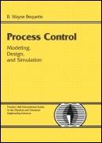

[ Team LiB ]

•
Table of Contents
Process Control: Modeling, Design, and Simulation
By
B. Wayne Bequette
Publisher
: Prentice Hall PTR
Pub Date
: December 26, 2002
ISBN
: 0-13-353640-8
Pages
: 769
Copyright
PRENTICE HALL INTERNATIONAL SERIES IN THE PHYSICAL AND CHEMICAL ENGINEERING SCIENCES
About Prentice Hall Professional Technical Reference
Preface
Background
Textbook Goals
Chapters
Learning Modules
Textbook Web Page
Acknowledgments
Chapter 1. Introduction
Section 1.1. Introduction
Section 1.2. Instrumentation
Section 1.3. Process Models and Dynamic Behavior
Section 1.4. Control Textbooks and Journals
Section 1.5. A Look Ahead
Section 1.6. Summary
Student Exercises
Chapter 2. Fundamental Models
Section 2.1. Background
Section 2.2. Balance Equations
Section 2.3. Material Balances
Section 2.4. Constitutive Relationships
Section 2.5. Material and Energy Balances
Section 2.6. Form of Dynamic Models
Section 2.7. Linear Models and Deviation Variables
Section 2.8. Summary
Suggested Reading
Student Exercises
Appendix 2.1: Solving Algebraic Equations
Appendix 2.2: Integrating Ordinary Differential Equations
Chapter 3. Dynamic Behavior
Section 3.1. Background
Section 3.2. Linear State Space Models
Section 3.3. Introduction to Laplace Transforms
Section 3.4. Transfer Functions
Section 3.5. First-Order Behavior
Section 3.6. Integrating System
Section 3.7. Second-Order Behavior
Section 3.8. Lead-Lag Behavior
Section 3.9. Poles and Zeros
Section 3.10. Processes with Dead Time
Section 3.11. Padé Approximation for Dead Time
Section 3.12. Converting State Space Models to Transfer Functions
Section 3.13. M
ATLAB
and S
IMULINK
Section 3.14. Summary
References
Student Exercises
Chapter 4. Empirical Models
Section 4.1. Introduction
Section 4.2. First-Order + Dead Time
Section 4.3. Integrator + Dead Time
Section 4.4. Discrete-Time Autoregressive Models
Section 4.5. Parameter Estimation
Section 4.6. Discrete Step and Impulse Response Models
Section 4.7. Summary
References
Student Exercises
Appendix 4.1: Files Used to Generate Example 4.4
Appendix 4.2
Chapter 5. Introduction to Feedback Control
Section 5.1. Motivation
Section 5.2. Development of Control Block Diagrams
Section 5.3. Response to Setpoint Changes
Section 5.4. PID Controller Algorithms
Section 5.5. Routh Stability Criterion
Section 5.6. Effect of Tuning Parameters
Section 5.7. Response to Disturbances
Section 5.8. Open-Loop Unstable Systems
Section 5.9. S
IMULINK
Block Diagrams
Section 5.10. Summary
References
Student Exercises
Chapter 6. PID Controller Tuning
Section 6.1. Introduction
Section 6.2. Closed-Loop Oscillation-Based Tuning
Section 6.3. Tuning Rules for First-Order + Dead Time Processes
Section 6.4. Direct Synthesis
Section 6.5. Summary
References
Student Exercises
Chapter 7. Frequency-Response Analysis
Section 7.1. Motivation
Section 7.2. Bode and Nyquist Plots
Section 7.3. Effect of Process Parameters on Bode and Nyquist Plots
Section 7.4. Closed-Loop Stability Concepts
Section 7.5. Bode and Nyquist Stability
Section 7.6. Robustness
Section 7.7. M
ATLAB
Control Toolbox: Bode and Nyquist Functions
Section 7.8. Summary
Reference
Student Exercises
Chapter 8. Internal Model Control
Section 8.1. Introduction to Model-Based Control
Section 8.2. Practical Open-Loop Controller Design
Section 8.3. Generalization of the Open-Loop Control Design Procedure
Section 8.4. Model Uncertainty and Disturbances
Section 8.5. Development of the IMC Structure
Section 8.6. IMC Background
Section 8.7. The IMC Structure
Section 8.8. The IMC Design Procedure
Section 8.9. Effect of Model Uncertainty and Disturbances
Section 8.10. Improved Disturbance Rejection Design
Section 8.11. Manipulated Variable Saturation
Section 8.12. Summary
References
Student Exercises
Appendix 8.1: Derivation of Closed-Loop Relationships for IMC
Chapter 9. The IMC-Based PID Procedure
Section 9.1. Background
Section 9.2. The Equivalent Feedback Form to IMC
Section 9.3. IMC-Based Feedback Design for Delay-Free Processes
Section 9.4. IMC-Based Feedback Design for Processes with a Time Delay
Section 9.5. Summary of IMC-Based PID Controller Design for Stable Processes
Section 9.6. IMC-Based PID Controller Design for Unstable Processes
Section 9.7. Summary
References
Student Exercises
Chapter 10. Cascade and Feed-Forward Control
Section 10.1. Background
Section 10.2. Introduction to Cascade Control
Section 10.3. Cascade-Control Analysis
Section 10.4. Cascade-Control Design
Section 10.5. Cascade IMC
Section 10.6. Feed-Forward Control
Section 10.7. Feed-Forward Controller Design
Section 10.8. Feed-Forward Control in the IMC Structure
Section 10.9. Summary of Feed-Forward Control
Section 10.10. Combined Feed-Forward and Cascade
Section 10.11. Summary
References
Student Exercises—Cascade Control
Student Exercises—Feed-Forward Control
Student Exercises—Feed-Forward and Cascade
Chapter 11. PID Enhancements
Section 11.1. Background
Section 11.2. Antireset Windup
Section 11.3. Autotuning Techniques
Section 11.4. Nonlinear PID Control
Section 11.5. Controller Parameter (Gain) Scheduling
Section 11.6. Measurement/Actuator Selection
Section 11.7. Implementing PID Enhancements in Simulink
Section 11.8. Summary
References
Student Exercises
Chapter 12. Ratio, Selective, and Split-Range Control
Section 12.1. Motivation
Section 12.2. Ratio Control
Section 12.3. Selective and Override Control
Section 12.4. Split-Range Control
Section 12.5. Simulink Functions
Section 12.6. Summary
References
Student Exercises
Chapter 13. Control-Loop Interaction
Section 13.1. Introduction
Section 13.2. Motivation
Section 13.3. The General Pairing Problem
Section 13.4. The Relative Gain Array
Section 13.5. Properties and Application of the RGA
Section 13.6. Return to the Motivating Example
Section 13.7. RGA and Sensitivity
Section 13.8. Using the RGA to Determine Variable Pairings
Section 13.9. M
ATLAB
RGA Function File
Section 13.10. Summary
References
Student Exercises
Appendix 13.1: Derivation of the Relative Gain for an
n
-Input–
n
-Output System
Appendix 13.2: m-File to Calculate the RGA
Chapter 14. Multivariable Control
Section 14.1. Background
Section 14.2. Zeros and Performance Limitations
Section 14.3. Scaling Considerations
Section 14.4. Directional Sensitivity and Operability
Section 14.5. Block-Diagram Analysis
Section 14.6. Decoupling
Section 14.7. IMC
Section 14.8. M
ATLAB
tzero
,
svd
, and LTI Functions
Section 14.9. Summary
References
Student Exercises
Appendix 14.1
Chapter 15. Plantwide Control
Section 15.1. Background
Section 15.2. Steady-State and Dynamic Effects of Recycle
Section 15.3. Unit Operations Not Previously Covered
Section 15.4. The Control and Optimization Hierarchy
Section 15.5. Further Plantwide Control Examples
Section 15.6. Simulations
Section 15.7. Summary
References
Student Exercises
Chapter 16. Model Predictive Control
Section 16.1. Motivation
Section 16.2. Optimization Problem
Section 16.3. Dynamic Matrix Control
Section 16.4. Constraints and Multivariable Systems
Section 16.5. Other MPC Methods
Section 16.6. Matlab
Section 16.7. Summary
References and Relevant Literature
Student Exercises
Appendix 16.1: Derivation of the Step Response Formulation
Appendix 16.2: Derivation of the Least Squares Solution for Control Moves
Appendix 16.3
Chapter 17. Summary
Section 17.1. Overview of Topics Covered in This Textbook
Section 17.2. Process Engineering in Practice
Section 17.3. Suggested Further Reading
Section 17.4. Notation
Student Exercises
Module 1. Introduction to M
ATLAB
Section M1.1. Background
Section M1.2. Matrix Operations
Section M1.3. The M
ATLAB
Workspace
Section M1.4. Complex Variables
Section M1.5. Plotting
Section M1.6. More Matrix Stuff
Section M1.7. For Loops
Section M1.8. m-Files
Section M1.9. Summary of Commonly Used Commands
Section M1.10. Frequently Used M
ATLAB
Functions
Additional Exercises
Module 2. Introduction to S
IMULINK
Section M2.1. Background
Section M2.2. Open-Loop Simulations
Section M2.3. Feedback-Control Simulations
Section M2.4. Developing Alternative Controller Icons
Section M2.5. Summary
Additional Exercises
Module 3. Ordinary Differential Equations
Section M3.1. M
ATLAB
ode—Basic
Section M3.2. M
ATLAB
ode—Options
Section M3.3. S
IMULINK
sfun (.mdl Files)
Section M3.4. S
IMULINK
sfun (.mdl Files)—Advanced
Section M3.5. Summary
Module 4. M
ATLAB
LTI Models
Section M4.1. Forming Continuous-Time Models
Section M4.2. Forming Discrete-Time Models
Section M4.3. Converting Continuous Models to Discrete
Section M4.4. Converting Discrete Models to Continuous
Section M4.5. Step and Impulse Responses
Section M4.6. Summary
Reference
Additional Exercises
Module 5. Isothermal Chemical Reactor
Section M5.1. Background
Section M5.2. Model (Chapter 2)
Section M5.3. Steady-State and Dynamic Behavior (Chapter 3)
Section M5.4. Classical Feedback Control (Chapters 5 and 6)
Section M5.5. Internal Model Control (Chapter 8)
Reference
Additional Exercises
Module 6. First-Order + Time-Delay Processes
Section M6.1. Motivation
Section M6.2. Closed-Loop Time-Domain Simulation
Section M6.3. Bode Analysis
Section M6.4. Ziegler-Nichols Tuning
Section M6.5. IMC-Based PID Control
Section M6.6. Summary
References
Additional Exercises
Appendix M6.1
Module 7. Biochemical Reactors
Section M7.1. Background
Section M7.2. Steady-State and Dynamic Behavior
Section M7.3. Stable Steady-State Operating Point
Section M7.4. Unstable Steady-State Operating Point
Section M7.5. S
IMULINK
Model File
Reference
Additional Exercises
Module 8. CSTR
Section M8.1. Background
Section M8.2. Simplified Modeling Equations
Section M8.3. Example Chemical Process—Propylene Glycol Production
Section M8.4. Effect of Reactor Scale
Section M8.5. For Further Study: Detailed Model
Section M8.6. Other Considerations
Section M8.7. Summary
References
Additional Exercises
Appendix M8.1
Module 9. Steam Drum Level
Section M9.1. Background
Section M9.2. Process Model
Section M9. Feedback Controller Design
Section M9.4. Feed-Forward Controller Design
Section M9.5. Three-Mode Level Control
Appendix M9.1: S
IMULINK
Diagram for Feed-Forward/Feedback Control of Steam Drum Level
Appendix M9.2: S
IMULINK
Diagram for 3-Mode Control of Steam Drum Level
Module 10. Surge Vessel Level Control
Section M10.1. Background
Section M10.2. Process Model
Section M10.3. Controller Design
Section M10.4. Numerical Example
Section M10.5. Summary
Reference
Additional Exercises
Appendix M10.1: The S
IMULINK
Block Diagram
Module 11. Batch Reactor
Section M11.1. Background
Section M11.2. Batch Model 1: Jacket Temperature Manipulated
Section M11.3. Batch Model 2: Jacket Inlet Temperature Manipulated
Section M11.4. Batch Model 3: Cascade Control
Section M11.5. Summary
Reference
Additional Exercises
Module 12. Biomedical Systems
Section M12.1. Overview
Section M12.2. Pharmacokinetic Models
Section M12.3. Intravenous Delivery of Anesthetic Drugs
Section M12.4. Blood Glucose Control in Diabetic Patients
Section M12.5. Blood Pressure Control in Post-Operative Patients
Section M12.6. Critical Care Patients
Section M12.7. Summary
References
Additional Exercises
Module 13. Distillation Control
Section M13.1. Description of Distillation Control
Section M13.2. Open-Loop Behavior
Section M13.3. SISO Control
Section M13.4. RGA Analysis
Section M13.5. Multiple SISO Controllers
Section M13.6. Singular Value Analysis
Section M13.7. Nonlinear Effects
Section M13.8. Other Issues in Distillation Column Control
Section M13.9. Summary
References
Additional Exercises
Appendix M13.1
Module 14. Case Study Problems
Section M14.1. Background
Section M14.2. Reactive Ion Etcher
Section M14.3. Rotary Lime Kiln Temperature Control
Section M14.4. Fluidized Catalytic Cracking Unit
Section M14.5. Anaerobic Sludge Digester
Section M14.6. Drug Infusion System
Section M14.7. Suggested Case Study Schedule
Section M14.8. Summary
Additional Exercises
Module 15. Flow Control
Section M15.1. Motivating Example
Section M15.2. Flowmeters
Section M15.3. Control Valves
Section M15.4. Pumping and Piping Systems
Section M15.5. Summary
References
Additional Exercises
Module 16. Digital Control
Section M16.1. Background
Section M16.2. PID Controllers
Section M16.3. Stability Analysis for Digital Control Systems
Section M16.4. Performance of Digital Control Systems
Section M16.5. Discrete IMC
Section M16.6. Summary
References
Additional Exercises
Appendix M16.1: S
IMULINK
.mdl File for Example M16.2
Appendix M16.2: S
IMULINK
.m and .mdl Files for Example M16.3
About the Author
[ Team LiB ]